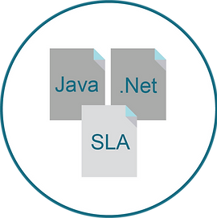
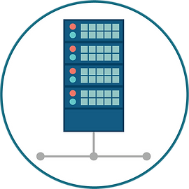
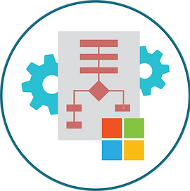
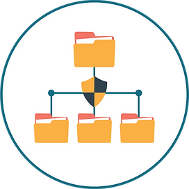
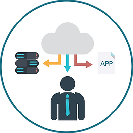

PARA NUESTROS CLIENTES
|  |  |  |
|---|---|---|
| APLICACIONES
Administración, Monitoreo y Desarrollo. |
INFRAESTRUCTURA DE TI
Administración de Bases de Datos, |
PLATAFORMAS MICROSOFT
Administración de Active Directory, |
|  |  | |
| PROTECCIÓN DE DATOS
Respaldos y Replicación. |
SEGURIDAD
Accesos e identidades. |
VIRTUALIZACIONES
Escritorios, Aplicaciones y Endpoint. |